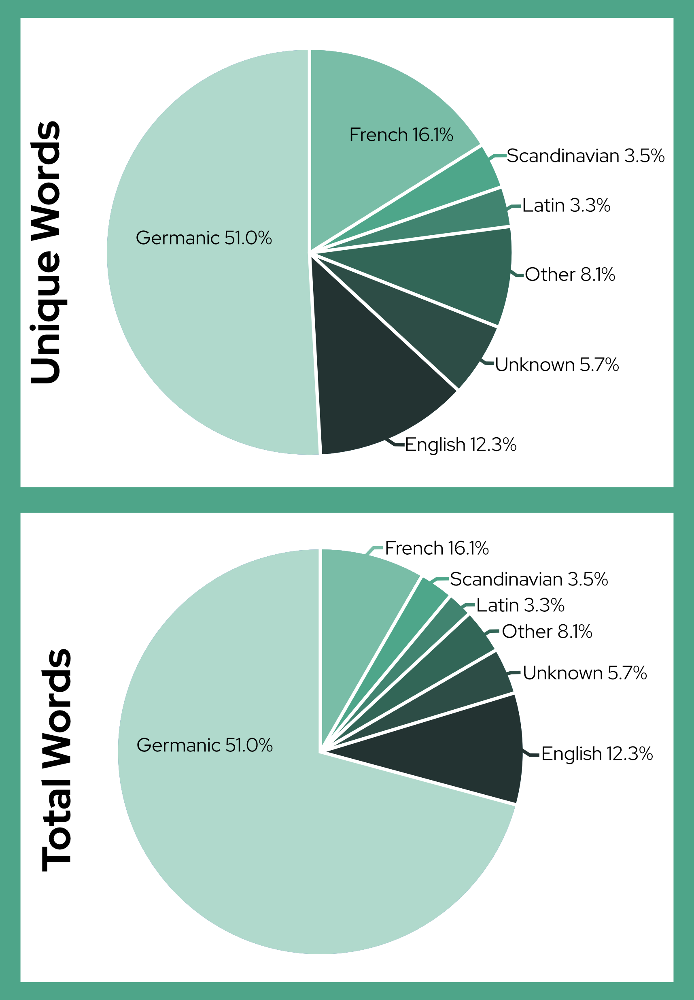
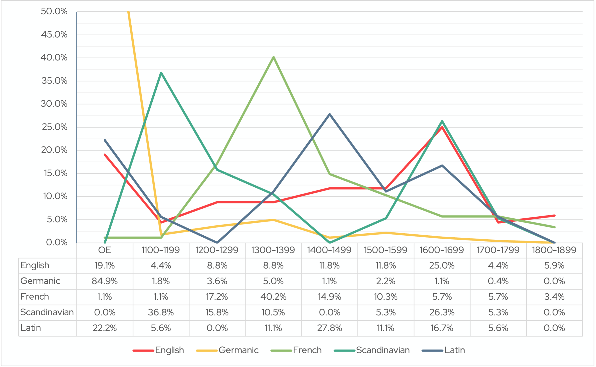
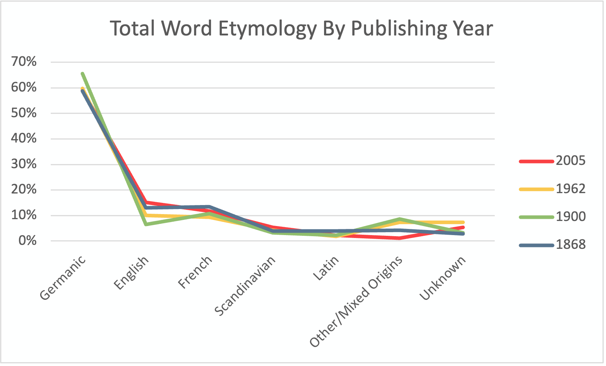
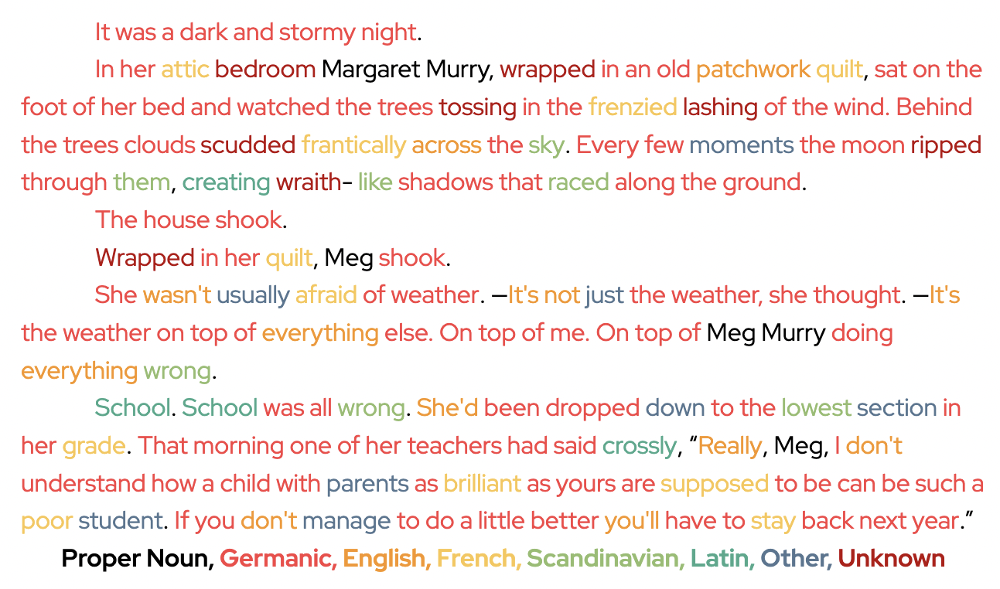
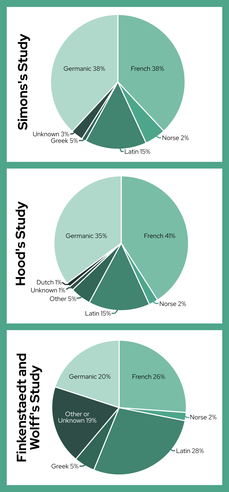
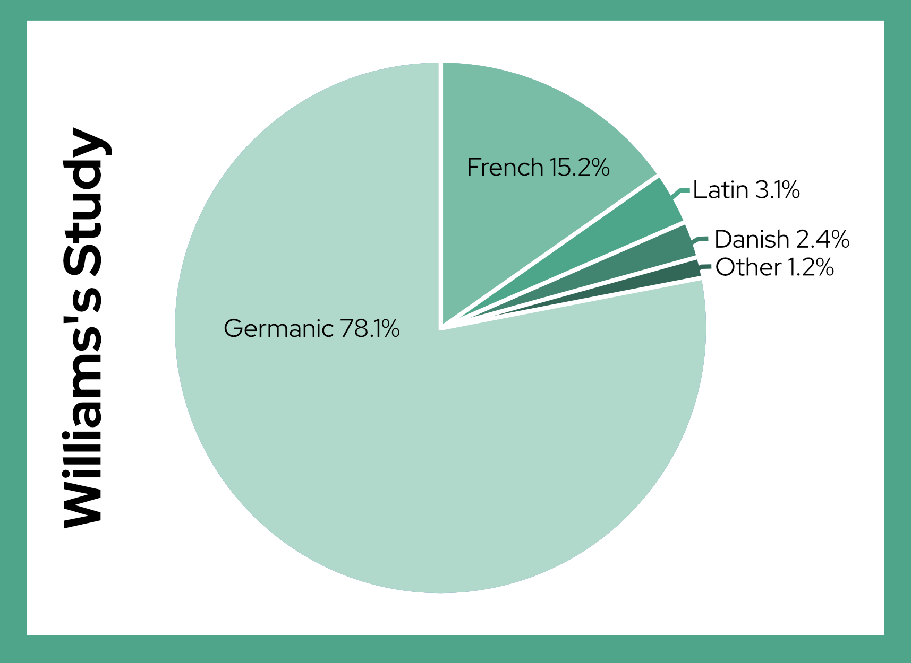

Etymology of Common English Words
Originally created December 2023 for ENGL 453: History of the English Language
English is well known for having a multitude of borrowed words, but the number of borrowed words in use is not well documented. Given the magnitude of the English lexicon, with new words being added constantly, it can be a difficult task to find the etymology of all of them. As such, this study instead focuses on commonly used words by dissecting excerpts from children’s books.
Obtaining Etymology
The Oxford English Dictionary [OED] not only gives current definitions, but also provides history for words “...from as far back as the 11th century… traced through 3.5 million quotations, from classic literature and specialist periodicals to film scripts, song lyrics, and social media posts” (OED n.d.a). For each word the given etymology was written down. The year in which the word was first recorded (with the same definition) was also recorded; Words seen before the 11th century are categorized as Old English [OE]. OE is generally marked as occurring from the 5th century to the middle of the 11th. Dating works from this time period is difficult; Around 400 pieces of literature still survive from this time period. (Johnson 2023).
The collected etymology was based on the core word, disregarding verb tenses, pluralization, possession, and some suffixes (-ful, -ly). The part of speech was also disregarded because English often turns nouns into verbs to create a new word, meaning words would be misidentified as originating from English when their core has a different etymology. However both suffixes and part of speech were accounted for when tracking the date of first recorded use in the OED.
Categories of Etymology
Germanic: This etymology does not refer to words borrowed from the German language, it refers to words which are native to English, i.e. they are not borrowed. OE came about when several germanic tribes migrated into England, mixing similar but different germanic languages, to create English (Johnson 2023).
English: This refers to words which have been created inside of English. Many of these were created via compounding two words (bookworm), or via contracting words (wasn’t). The words being compounded often both had Germanic roots, however it was decided that it would be more straightforward to put them in their own category rather than try to split compounds into multiple etymologies.
Scandinavian: This refers to words that originate from Old Scandinavian and are marked as such in the OED. Other sources sometimes refer to these as Norse words. When comparing other studies done on English etymology I will be treating Scandinavian and Norse as synonyms.
Latin and French: All romance languages are derived from Latin, so it may seem confusing to have both French and Latin appear as categories. However, what's of concern is where the word was directly borrowed from. Words will only be marked as of Latin origin when the words were directly borrowed from it, without another language acting as a middleman.
Other: There are many cases where the OED says that the word may be from two different languages. For instance, borrowing from either French or Latin, or possibly both. In these cases these words were grouped into the “Other” category. This category also included etymologies which accounted for less than 1% of the sample. Origins in this category include Greek, German, Celtic, Dutch, Dutch/German, Italian/French, and French/Latin.
Unknown: These are words which the OED is unsure of etymology.
The Sampled Words
Full Text Excerpts: Excerpt Sources
The sample of words was acquired from excerpts of 5 different pieces of media, who’s target audience is children and young adults. These books are meant to be easy to approach and understand, oftentimes meaning more common words are used in place of obscure ones. The writing style also more closely mirrors spoken English. Excerpts were taken from the beginnings of the following sources: Little Women by Louisa May Alcott, The Wonderful Wizard of Oz by L. Frank Baum, A Wrinkle In Time by Madeleine L’Engle, Star Wars: Episode IV- A New Hope written by George Lucas, and The Lightning Thief by Rick Riordan.
Analyzing the Data
Full Dataset: Common Etymology Data Set
General Etymology
A total of 1421 words were categorized, with 545 unique words across all five sources. When just looking at the etymology of the total running word count (ie “the” was counted 63 times for Germanic), we get these figures: 70.8% Germanic, 8.9% English, 8.1% French, 2.8% Scandinavian, 2.2% Latin, 3.5% Other and 3.7% Unknown. This serves to illustrate the sheer amount of common words that are native to English.
Of the 545 unique words we get these figures: 51.0% Germanic, 12.3% English, 16.1% French, 3.5% Scandinavian, 3.3% Latin, 8.1% Other and 5.7% Unknown. The Germanic has drastically decreased, with the other origins increasing. With the added context of the total etymology we can infer that words with Germanic origins are most often words which are repeated, accounting for most articles, conjunctions, pronouns, and interjections in writing.
Overall we can see that Germanic and French make up the largest portion of the common lexicon (from this sample). This makes sense given the origins of English, and the heavy influence of French during the Norman Invasion. It’s notable that Scandinavian, in both graphs, outnumbers Latin. I wonder if this indicates that Scandinavian words are more commonly used, or if it’s just a repercussion from the choices I made for mixed origin words, or perhaps this is a result of the small sample size.

Entering the Lexicon
The first recorded usage of each word was also noted. The dates were split into centuries and then a count was done to see if there was a trend of specific etymological sources entering the English lexicon during certain time periods. Other and Unknown were omitted; Tracking any sort of trend was too unlikely given the scattered and varied nature of those categories.

As we can see the majority of Germanic words come from Old English (OE), with a small spike in the 14th century. It’s of note that for this sample the date was acquired via the first record with the definition used in the text excerpt. For instance “fair” has been recorded in the OE period, but meant “beautiful.” It wasn’t until 1387 that “fair” was used to describe an equitable conduct. If I were to do this study again, I would record the first use; The changing definitions of words is not the focus of this timeline, and having the discrepancy could be skewing the data.
The trend of borrowed French peaks during the 14th century, towards the end of Norman conquest. This is expected given the influence and power the French language had over England at this time. The century after the French peak, the 15th century, Latin peaks. Given that Latin was seen as a fancy and superior language at the time, even becoming the language of courts in the late 12th century, this peak also makes sense. Interestingly Scandinavian has two peaks, one in the 12th century and a second smaller peak in the 17th century. The first was probably due to Viking influence, and I wonder if during the 17th century there was increased contact with Scandinavian people due to a historical event.
Age of the Sampled Texts
The texts sampled for this work span nearly 150 years. Works were published in 1868, 1900, 1962, 1977 and 2005. This brings up the question; Did the date of publication affect the word usage, and therefore affect the etymology? In order to see, I charted the total word etymology, separating the sources and labeling them by year. I chose to not include Star Wars, created in 1977, because the style and presentation of writing was very different from the other works. It also contained the fewest number of words, 82, just under half the number of words in The Lightning Thief excerpt, as well as The Wonderful Wizard of Oz excerpt (149 and 158 respectively). The Star Wars publication date was also very close to A Wrinkle in Time, meaning it probably wouldn’t have varied much.
From the graph we can see no trends. However the individual samples were fairly small, meaning that the data may not be representative of changes that happened as a whole. It would be interesting to gather larger sample sizes and see if there is an etymological difference as we move in time.

Visualizing Etymology
The following is a small portion of the excerpt from A Wrinkle in Time with the words colored coded based on their etymology. This provides an interesting visual look at the etymological composition of a text.

Previous Studies
Simons surveyed a list of the 5,000 most frequently used words from Wordfrequency.info (derived from COCA). The Online Etymology Dictionary was used to determine etymology. They found that approximately 38% words were of Germanic origin, 38% French, 15% Latin, 5% Norse, less than 1% was Greek and 3% was of an unknown or unlisted origin (2017).
Hood surveyed a list of the 10,000 most common words from A Basic Writing Vocabulary by Ernest Horn. He used Webster's New World Dictionary as his source for etymology. According to his findings approximately 35% were of Germanic origin, 41% French, 15% Latin, 2% Norse, less than 1% Dutch, 1% of unknown origin and 5% of an unlisted origin (1965).
Finkenstaedt and Wolff examined the Shorter Oxford English Dictionary, which contained 81,182 words, and found the etymology using the same source. Approximately 20% were of Germanic origin, 26% French, 28% Latin, 2% Norse, 5% Greek and 19% was of an unknown or unlisted origin (1973).
The Simons and Hood surveys found similar statistics, which makes sense given they were using a similar set of data points. The Finkenstaedt and Wolff study differs, but that is expected given the entire dictionary was surveyed, meaning far more obscure words are included. This is especially important to note given many legal and scientific terms are derived from Latin, possibly contributing to its larger percentage. Interestingly the percentage of Norse is fairly similar across all three studies indicating that it has a consistent influence on the English lexicon.
Comparatively my survey varies quite a bit from all three, which makes sense given my sample was fairly unique. Notably my percentage for Latin and Germanic greatly diverged from the other studies. I think this difference is mostly down to how I decided to categorize. My list of words did not consistently combine verb tenses for irregular verbs, ie “to be, to do,” leaving many ‘unique’ entries with the same etymology. Given these verbs often have Germanic roots that will raise the percentage. As for Latin, many words were marked as being from either Latin or French origin. In these cases I decided to put them in the other category. The other researchers may have made different choices for these scenarios. It may also be down to the resources used to determine etymology.

The 4th Study?
Williams proposed a statistic in his book, Origins of the English Language, stating that “[w]hen all the words in running text are put into one group, the percentages are as follows: English: 78.1; French: 15.2; Latin: 3.1; Danish; 2.4; Other (Greek, Dutch, Italian, Spanish, German, etc): 1.3” (1975, p.68). This statement was immediately preceded by the numbers obtained from Hood’s study, however I have no idea how he came to these numbers. Especially given Hood did not have a running text, instead he had a set of frequently used words. There is no further explanation than “Comment: These data were compiled from several thousand business letters” (1975, p.68). I’m unsure if this comment is referring to the Hood study, or if Williams himself ran a study himself to provide these numbers.

If the comment does refer to the Hood study, as one would reasonably assume given no mention of his own study, it feels dishonest. According to Hood, “Horn’s samples from business and personal correspondence account for over half of the running words counted” (1965 p.29). By just highlighting the business letters it can make the sample seem less representative of commonly used words. Using the phrasing “several thousand” can also downplay the true scope of Horn’s study, which had over 5 million running words. Horn’s study definitely has flaws and is most likely outdated (it was created in 1922), however it should be discredited for the correct reasons.
Fascinatingly William’s mystery percentages line up fairly well to the data I gathered on my own running text sample, if you combine my Germanic and English into a single category (which is an understandable choice). I will note, this similarity is assuming that when he used the term “Danish” he meant words of Norse origin, and not words borrowed from the Danish language. If this isn’t the case, then the Danish etymology is an outlier; I did not find a single word of Danish origin. My percentage of French was also smaller, however that could easily be due to my choice to place mixed origin words into the “other” category.
The Point
People are unaware of the composition of English, we tend to know that a majority of our vocabulary is borrowed, but when asked for anything more specific, people tend to shrug. For percentages on the composition of English, most linguists shrug too. Having percentages is helpful, without concrete numbers people may not grasp the true influence of different languages. Saying a majority is too vague.
English is a very unique language, in large part due to the massive impact that other languages had on us. In my small survey of 545 unique words, there were 11 distinct etymological origins. It’s incredible that there isn’t just a smattering of a few words from a few languages with most borrowed words coming from a single source, instead it's a true mix. This is especially apparent in the studies done by Finkenstaedt and Wolff where the largest percentage only slightly differs from the others.
English is a beautiful, messy, smorgasbord of a language, and everyone should know that. There’s so much “othering” that we do to unfamiliar peoples and cultures in the world, but the language we’re doing it in couldn’t exist in the same way without outside influence. English isn’t perfect, or better compared to other languages but it’s a mix, the result of different people coming together throughout the ages. We should take English’s lead, embrace other people and embrace differences and change (though we probably shouldn’t follow the lead of nonsensical spelling).
Final Thoughts
I really want to return to this question and tackle it again once I know Python and can automate more of the process. I also plan to help update this Wikipedia article with information from the Hood study and clarifying some of the “citations needed.” https://en.wikipedia.org/wiki/Foreign-language_influences_in_English
Citations
Alcott, L. M. (1868). Little Women. Roberts Brothers.
Baum, L. F. (1900, May 17). The Wonderful Wizard of Oz. George M. Hill Company.
Finkenstaedt, T., & Wolff, D. (1973). Ordered Profusion: Studies in Dictionaries and the English Lexicon. Heidelberg.
L'Engle, M. (1962, January 1). A Wrinkle in Time. Ariel Books.
Lucas, G. (Director). (1977, May 25). Star Wars: Episode IV – A New Hope. Lucasfilm Ltd.
Merriam-Webster. (n.d.). Dread. Merriam-Webster.com dictionary. Retrieved November 25, 2023, from https://www.merriam-webster.com/dictionary/dread
OED. (n.d.a) About the OED. Oxford English Dictionary. Retrieved November 27, 2023, from https://www.oed.com/information/about-the-oed/
—. (n.d.b). Oxford English Dictionary. Retrieved November 5, 2023, from https://www.oed.com/?tl=true
Riordan, R. (2005, July 1). The Lightning Thief. Puffin Books
Roberts, A. H. (1965).A Statistical Linguistic Analysis of American English. Mouton & Co.
Simons, A. (2017, April 13). The English language is a lot more French than we thought, here’s why. Medium. https://medium.com/@andreas_simons/the-english-language-is-a-lot-more-french-than-we-thought-heres-why-4db2db3542b3
Williams, J. M. (1975). Origins of the English Language, a Social and Linguistic History. Free Press.